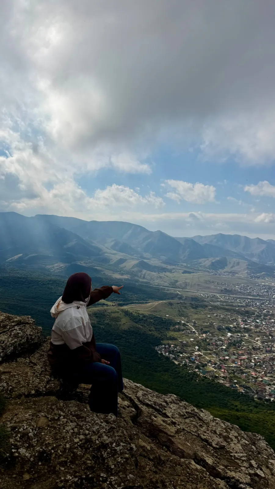
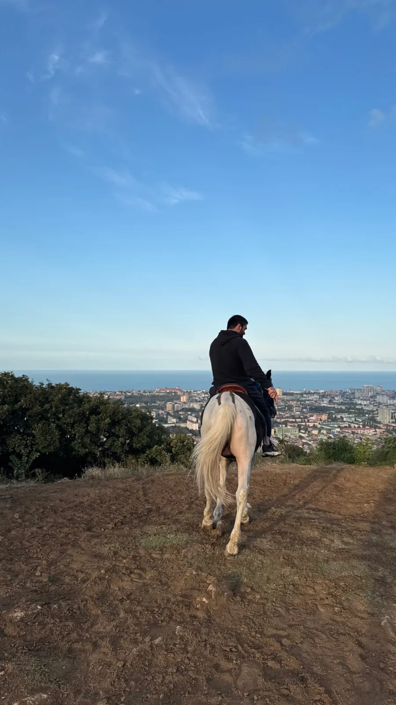
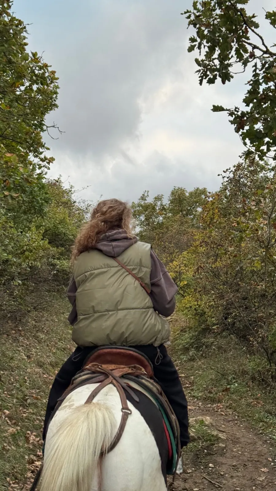
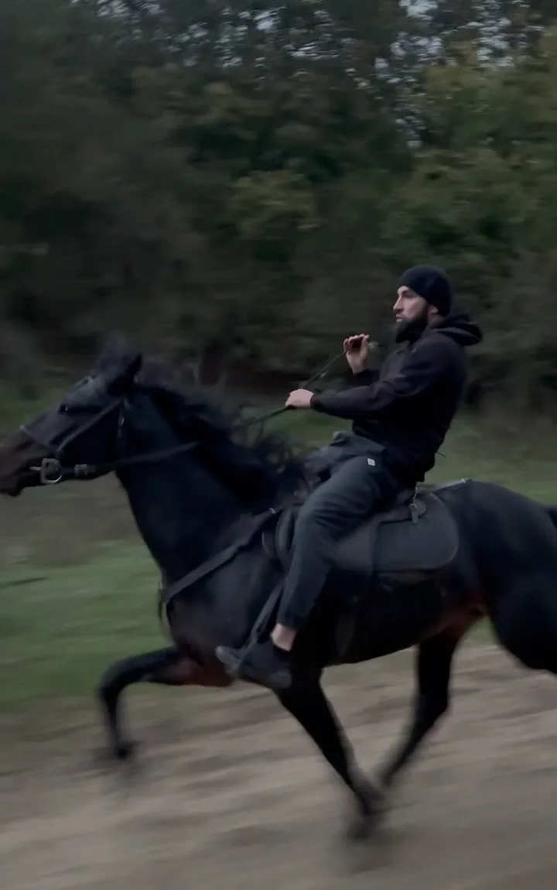
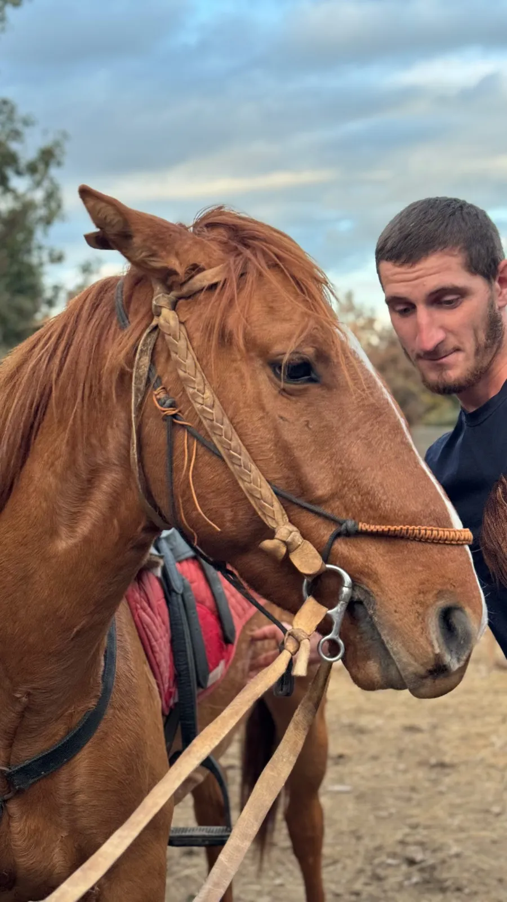
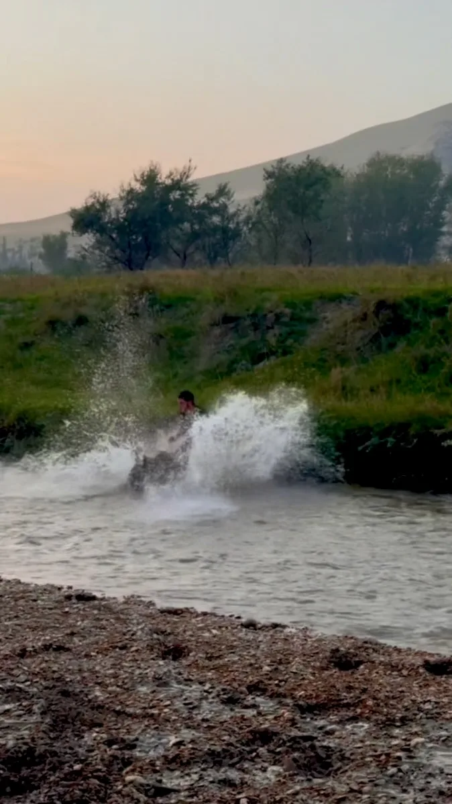
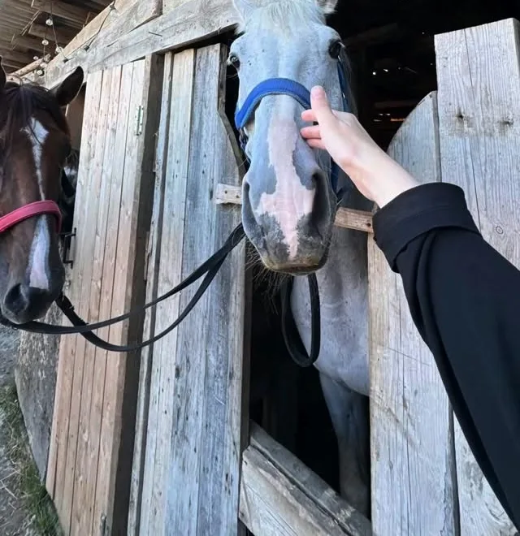

Заезд№1

На смотровую
Для первого раза
Короткий подъём к видовой площадке над городом. Шагом, без спешки: хватит, чтобы привыкнуть к лошади и сделать фото.
- Дистанция
- 3,5 км
- В седле
- 45–60 мин
- Цена
- … ₽

От часа до семи часов в седле. Инструктор рядом весь маршрут, опыт не нужен.
Заезд№1

Для первого раза
Короткий подъём к видовой площадке над городом. Шагом, без спешки: хватит, чтобы привыкнуть к лошади и сделать фото.
Заезд№2

Для начинающих
Неспешная прогулка по лесу и склонам с видами. Для тех, кто хочет побыть в седле подольше, но без галопа.
Заезд№3

Для уверенных всадников
Целый день в седле: рысь и галоп там, где позволяет тропа, привал и панорамы, до которых не доехать на машине.

Да. Для первого раза есть спокойные маршруты шагом. Перед выездом инструктор покажет, как сидеть и управлять лошадью, и будет рядом всю дорогу.
Удобные штаны, закрытая обувь на небольшом каблуке или кроссовки, ветровка: в горах прохладнее, чем в городе. Длинная юбка тоже подойдёт. Шлемы выдаём?
Дети — с … лет, вес всадника — до … кг. Если сомневаетесь, напишите нам, подскажем.
Да, собираем группы. Сколько человек за раз? Детей ведёт инструктор в поводу.
Предупредим заранее и перенесём прогулку на другой день.


Заявка уйдёт нам в WhatsApp, мы подтвердим её в течение … часа.